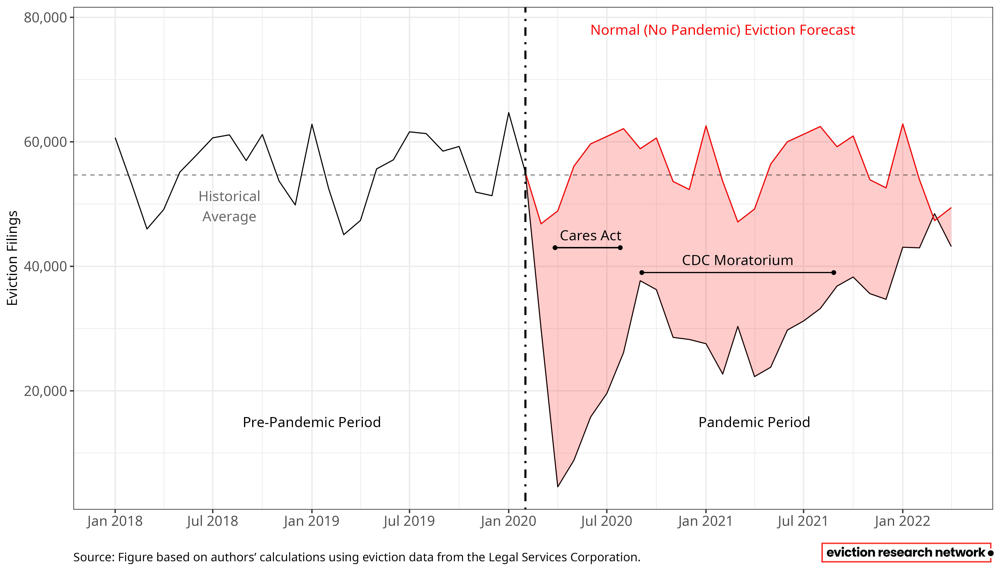
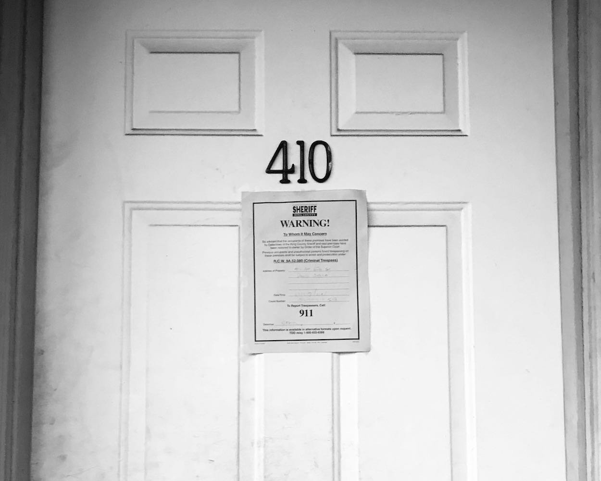
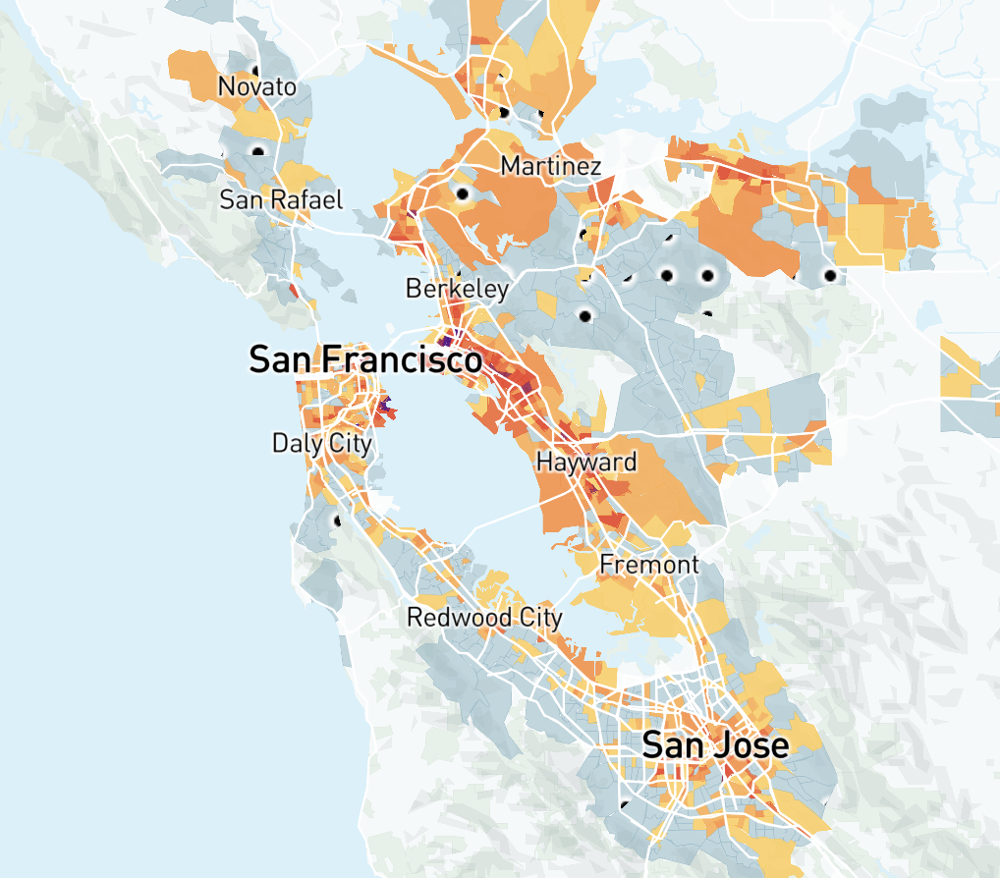
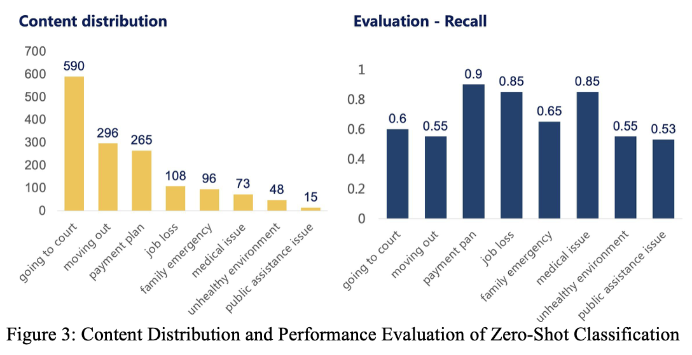

2026 · Report
Keeping People in Their Homes: The Impact of Emergency Rental Assistance on Evictions
Analyzes the efficacy of federal eviction assistance during COVID-19. Funded by HUD.
Read MoreUniversity of California, Berkeley
Follow us on Bluesky for new releases & updates
Learn More
Our Mission
We create things that can't be unseen. The Eviction Research Network collects, analyzes, and maps eviction data while helping other researchers do the same. We specialize in using social and data science to analyze racial and gender disparities in eviction — and urban theory to help explain our findings.
Our goal is to expand public and scholarly knowledge on the prevalence and drivers of evictions in under-studied regions, highlight work from scholars in the field, and provide evidence-based research that legislatures, practitioners, and advocates can use to inform policy.
More about ERN
Policy Tools
A national forecast of where renters face the greatest combined risk of eviction, displacement, and long-term poverty.
HPRM integrates estimates of eviction risk with indicators of displacement vulnerability and pandemic-era unemployment to highlight neighborhoods where housing precarity is most severe. Policymakers, advocates, and service providers can use it to target resources, design anti-displacement strategies, and advance housing equity.
Explore the ModelState Coverage
The Eviction Research Network builds eviction data pipelines in under-studied regions to illuminate disparities by race, gender, and geography.
Post-pandemic eviction trends are reaching alarming levels in many states. Our state profiles, dashboards, and reports arm advocates and policymakers with the evidence they need to act.
Our baseline methodology for working with heterogeneous court data — OCR, NLP extraction, geocoding, Bayesian demographic estimation — is documented in the 2024 Cityscape paper.
Click a state on the map to view its profile, dashboard, and reports.
Recent Output

Analyzes the efficacy of federal eviction assistance during COVID-19. Funded by HUD.
Read More
Interactive mapping tool visualizing neighborhoods at highest risk of eviction and economic displacement in the Bay Area.
Explore
Uses large language models to extract and understand the reasons for eviction from tenant testimonies.
Read MoreAre you a researcher, legal aid provider, or policymaker working on eviction data in your region? We build data pipelines, train collaborators, and co-author research across the United States.
Get in Touch